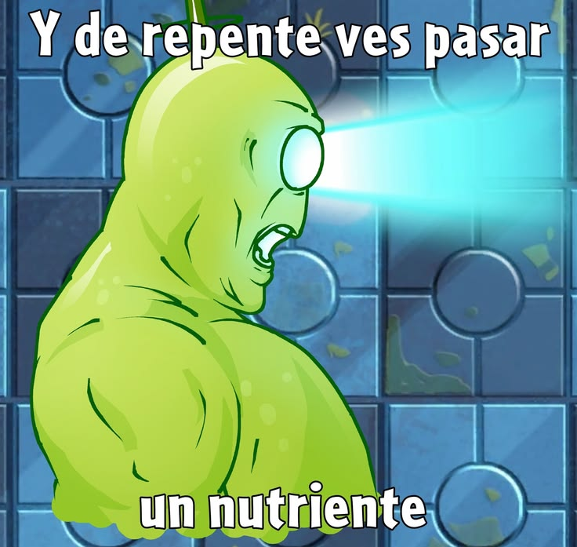
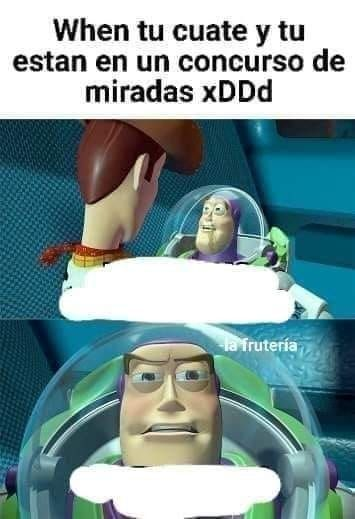

¿Qué es un n-grama?
Un n-grama es un grupo de n elementos seguidos dentro de un texto. Los elementos normalmente son palabras (a veces letras). Es como cortar una frase en "pedacitos" de tamaño fijo.
Origen y concepto de los n-gramas
La idea viene de la estadística y la teoría de la información del siglo XX: Claude Shannon estudió qué tan predecible es la siguiente letra o palabra. La "n" es solo el número de elementos que agrupamos.
¿Cómo funcionan los n-gramas?
Primero se tokeniza el texto; luego se desliza una "ventana" de tamaño n, de token en token, y se cuenta cuántas veces aparece cada grupo. Esos conteos muestran qué combinaciones son comunes.
Unigramas
Son n-gramas de 1 elemento: palabras sueltas. En "me gusta Python" hay tres unigramas: "me", "gusta" y "Python". Sirven para contar la frecuencia de cada palabra.
Bigramas
Grupos de 2 palabras consecutivas. En "me gusta Python": "me gusta" y "gusta Python". Capturan un poco de contexto: lo que viene después de cada palabra.
Trigramas
Grupos de 3 palabras seguidas. Dan más contexto que los bigramas, pero hay menos repeticiones, porque combinaciones largas se repiten menos en un texto.
N-gramas de cuatro o más elementos
Se llaman 4-gramas, 5-gramas, etc. Reconocen frases largas y muy específicas, pero necesitan muchísimo texto para encontrar repeticiones útiles.
Ejemplos de n-gramas en el lenguaje cotidiano
"buenos días" y "por favor" son bigramas muy frecuentes; "muchas gracias por todo" es un 4-grama. Las usamos tanto que casi las decimos como una sola unidad.
N-gramas en diferentes idiomas
Funcionan en cualquier idioma porque solo cuentan secuencias. Pero cada lengua tiene sus propios patrones: en inglés "of the" es muy común y en español lo es "de la".
N-gramas y frecuencia de palabras
Contar cuántas veces aparece cada n-grama muestra los patrones más usados. Con pandas se puede guardar el conteo en una tabla y ordenarla de mayor a menor.
N-gramas y predicción de texto
Si después de "buenos" casi siempre aparece "días", el sistema sugiere "días". Predecir la siguiente palabra es elegir la que más veces siguió a las anteriores.
N-gramas en los teclados de celulares
Las sugerencias sobre tu teclado usan modelos de n-gramas (hoy combinados con otras técnicas) y se adaptan a cómo escribes tú.
N-gramas en buscadores de Internet
Los buscadores autocompletan tu búsqueda con las frases más frecuentes que empiezan igual. También los usan para entender si dos consultas significan algo parecido.
N-gramas en inteligencia artificial
Fueron la base de los primeros modelos de lenguaje. Los modelos actuales son más complejos, pero siguen la misma idea: predecir qué viene según lo que ya apareció.
N-gramas en el procesamiento del lenguaje natural (PLN)
En PLN se usan para clasificar textos, detectar el idioma, corregir ortografía y analizar opiniones. Son una herramienta simple y rápida para empezar.
Ventajas de utilizar n-gramas
- Fáciles de entender y programar.
- Rápidos y no necesitan equipo potente.
- Funcionan en cualquier idioma.
Limitaciones de los n-gramas
- Solo ven un contexto corto (las últimas n-1 palabras).
- No entienden el significado.
- Con n grande hay demasiadas combinaciones y pocas repeticiones.
Ejemplo práctico de análisis con n-gramas
Sacamos los bigramas de una frase y contamos cuántas veces aparece cada uno:
from collections import Counter
import pandas as pd
palabras = "el gato come y el gato duerme".split() # tokenización simple
n = 2 # tamaño del n-grama
# Ventana deslizante: toma n palabras desde cada posición
ngramas = [" ".join(palabras[i:i+n]) for i in range(len(palabras)-n+1)]
conteo = Counter(ngramas) # cuenta repeticiones
tabla = pd.DataFrame(conteo.items(), columns=["ngrama", "frecuencia"])
print(tabla.sort_values("frecuencia", ascending=False))
Resultado: "el gato" aparece 2 veces; los demás, 1.
Diferencia entre palabra, frase y n-grama
Una palabra es una unidad con significado. Una frase es una unidad con sentido gramatical. Un n-grama es solo un corte de n elementos seguidos, tenga sentido o no ("gato come y" es un trigrama válido).

Aplicaciones de los n-gramas en la actualidad
Autocorrección y sugerencias del teclado, autocompletado de buscadores, detección de plagio, identificación del idioma, reconocimiento de voz y análisis de opiniones en redes sociales.
